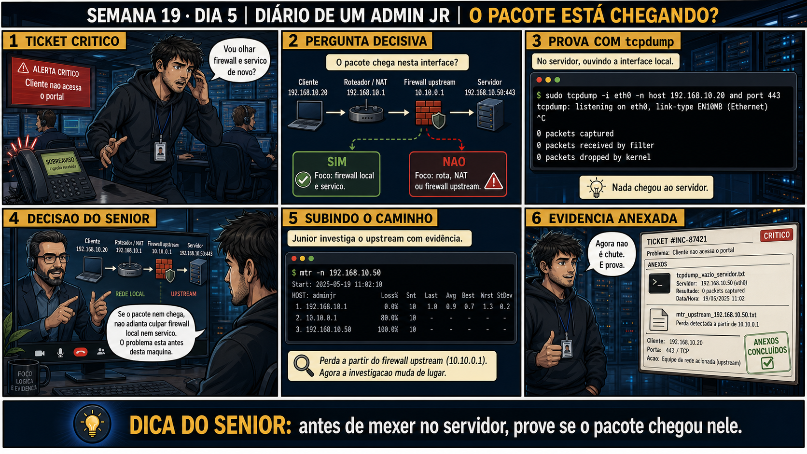

Investigação: o Pacote Chega?
capturar no ponto certo é metade da resposta antes mesmo de ler uma linha
ANTES DE ALTERAR, OBSERVE. DEPOIS DE ALTERAR, VALIDE.
1. O chamado
💡 Passa o mouse nas palavras destacadas pra ver uma dica rápida — clica se quiser a explicação completa com analogia.
2. Antes de ver as opções — tenta responder
3. Questão comentada — clica numa alternativa
4. Decodificador de conceitos
Clica em qualquer termo pra ver a definição completa e uma analogia do dia a dia:
5. Ferramentas e leitura da evidência
| Ponto de captura | O que confirma |
|---|---|
| No cliente | Se o pacote realmente SAIU da máquina de origem. |
| No servidor | Se o pacote realmente CHEGOU na máquina de destino. |
| Nos dois, comparando | Isola se o problema é local a um dos lados ou está no caminho entre eles. |
--- terminal 1: capturando no cliente --- $ sudo tcpdump -i eth0 host 10.10.10.50 and port 443 -w cliente.pcap 14:55:00 IP 10.10.10.20.51600 > 10.10.10.50.443: Flags [S], seq 1000, win 64240, length 0 # confirma: o SYN SAIU do cliente --- terminal 2, ao mesmo tempo: capturando no servidor --- $ sudo tcpdump -i eth0 host 10.10.10.20 and port 443 -w servidor.pcap # (nenhuma linha aparece) # confirma: o SYN NÃO CHEGOU no servidor --- conclusão --- Pacote saiu do cliente, não chegou no servidor. Problema está no caminho entre os dois: roteamento, firewall ou NAT intermediário. Próximo passo: capturar num ponto intermediário (ex.: no gateway) pra isolar ainda mais.
5.1 O painel 5 da prancha de hoje mostra o sênior insistindo em capturar nos DOIS lados ao mesmo tempo, não um de cada vez
Um colega prefere capturar primeiro só no cliente, esperar, depois capturar só no servidor em outro momento, achando que dá no mesmo resultado.
5.2 "Se o pacote aparece nas duas capturas, já está tudo resolvido?"
Um colega vê o SYN aparecendo tanto na captura do cliente quanto na do servidor, e já fecha o chamado como resolvido.
6. Procedimento profissional
- Identifique os dois pontos relevantes: onde o pacote sai (cliente) e onde deveria chegar (servidor).
- Prepare os filtros de host/port certos em cada ponto, como visto no Dia 2.
- Inicie as duas capturas simultaneamente, salvando em arquivo com -w (Dia 4) pra comparar depois com calma.
- Gere o tráfego de teste enquanto as duas capturas rodam.
- Compare: se sai de um lado e não chega no outro, o problema está no caminho; se chega mas o handshake não completa (Dia 3), o problema está mais perto do destino.
7. Laboratório guiado — marca conforme for testando
- Prepare duas VMs de laboratório (cliente e servidor) com um serviço simples ativo numa porta conhecida.# no servidor: $ python3 -m http.server 8080Resultado esperado: as duas VMs conseguindo se comunicar normalmente antes do teste.
Se o seu resultado foi diferente
"bash: python3: command not found" → usepython -m http.server 8080(algumas distros ainda mapeiampythonpra Python 3), ou instale comsudo apt install python3. - Inicie captura simultânea nas duas VMs, filtrando por host e porta relevantes, salvando em arquivo.# no cliente: $ sudo tcpdump -i eth0 -n host 10.10.10.20 and port 8080 -w cliente.pcap # no servidor, ao mesmo tempo: $ sudo tcpdump -i eth0 -n host 10.10.10.50 and port 8080 -w servidor.pcap
🔍 Detalhar esse comando
- host 10.10.10.20 and port 8080
- Isola só a conversa entre esse host específico e essa porta específica — a mesma lógica de interseção do Dia 2, agora aplicada nos dois pontos de captura ao mesmo tempo.
- -w cliente.pcap
- Grava a captura desse lado (o cliente) num arquivo próprio, pra comparar depois com calma com o arquivo do outro lado — a mesma técnica do Dia 4, aplicada aqui pra viabilizar a comparação entre dois pontos.
Resultado esperado: dois arquivos .pcap sendo gravados ao mesmo tempo.🧑🏫 Aqui entra o Mentor (em breve): se você não souber como sincronizar os dois terminais ao mesmo tempo, este é o ponto onde o chat com o Sênior-IA vai te ajudar com tmux ou duas sessões SSH.Se o seu resultado foi diferente
Os dois arquivos .pcap não têm nenhum pacote em comum, mesmo com o teste funcionando → confirme que os IPs10.10.10.20e10.10.10.50nos dois comandos batem com os IPs reais das duas VMs (rodeip anas duas). IP trocado entre cliente e servidor é o erro mais comum nesse tipo de captura em dois pontos. - Gere tráfego de teste do cliente pro servidor (curl ou similar) enquanto as duas capturas rodam.# no cliente: $ curl http://10.10.10.20:8080Resultado esperado: pacotes aparecendo nas duas capturas, confirmando entrega completa.
- Bloqueie temporariamente a porta no servidor (com um firewall simples de teste) e repita a captura dupla.# no servidor: $ sudo iptables -A INPUT -p tcp --dport 8080 -j DROP # repita a captura dupla do passo anterior e o curl do cliente
🔍 Detalhar esse comando
- sudo iptables -A INPUT
- Acrescenta (Append) uma nova regra à cadeia INPUT — as regras que decidem o que fazer com pacotes chegando NESSA máquina.
- -p tcp --dport 8080
- Restringe a regra a pacotes TCP com porta de destino 8080 — só esse tráfego específico é afetado.
- -j DROP
- Define a ação (jump/target): descartar o pacote silenciosamente, sem avisar quem enviou. É por isso que o cliente vê o SYN saindo mas nunca recebe resposta nenhuma — nem um RST, só silêncio.
Resultado esperado: SYN aparecendo na captura do cliente, mas ausente na captura do servidor. - Documente a conclusão de cada cenário testado, citando exatamente qual evidência sustenta cada conclusão.Resultado esperado: relatório com evidência específica, não opinião, pra cada cenário.
- CENÁRIOAção: Remova a regra de firewall de teste no servidor e confirme que a porta voltou a responder normalmente.# no servidor: $ sudo iptables -D INPUT -p tcp --dport 8080 -j DROP $ sudo iptables -L INPUT -n | grep 8080 || echo "regra removida" # no cliente, confirme que voltou: $ curl http://10.10.10.20:8080Resultado esperado: a mensagem "regra removida" e o curl do cliente respondendo normalmente de novo, como antes do bloqueio.Por que fizemos isso: uma regra de DROP esquecida no iptables é exatamente o tipo de mudança que gera um chamado idêntico ao de hoje, semanas depois, pra outra pessoa investigar do zero. Fechar o laboratório sem residual é a mesma disciplina de "ZERO mudança no sistema" que vale pra qualquer teste de rede.Cilada comum: usar
iptables -F(flush) pra "limpar tudo de uma vez" em vez de remover só a regra específica — isso apaga QUALQUER outra regra de firewall que já existisse na VM antes do laboratório, inclusive regras que não foram criadas por você hoje.Se o seu resultado foi diferente
"iptables: Bad rule (does it exist?)" → a sintaxe de remoção (-D) precisa bater exatamente com a de adição (-A). Confira as regras existentes comsudo iptables -L INPUT -n --line-numberse remova pelo número da linha comsudo iptables -D INPUT <numero>se a remoção por sintaxe falhar.
8. Validação e encerramento
- Capturar em dois pontos simultaneamente isola exatamente onde um pacote se perde.
- Pacote saindo do cliente e não chegando no servidor aponta pro caminho entre eles, não pra nenhum dos dois isoladamente.
- Ver o SYN chegando não é prova de handshake completo — as etapas seguintes ainda precisam ser confirmadas.
- Evidência de dois pontos substitui a discussão de "quem está certo" por dados concretos.
Rollback e limites
9. Resposta final
🏁 Semana 19 concluída — tcpdump, da primeira captura à investigação de dois pontos
Você fechou cinco dias que levaram você de "nunca rodei tcpdump" até montar uma investigação completa comparando captura simultânea em dois pontos da rede. No caminho: captura básica por interface, filtros host e port, leitura do three-way handshake, e persistência de evidência em arquivo .pcap.
Amanhã começa a Semana 20: VLANs — como uma única rede física de switch pode ser segmentada logicamente em várias redes isoladas, e como diagnosticar quando esse isolamento não está funcionando como esperado.